Plan Crutches opens the plan from plan mode as a review page in your browser. You see the change tree, the signatures of new and changed methods and a diff against your files. You comment on anything you select, tick files as OK and press Submit. Claude revises the plan, or starts the implementation when nothing is pending.
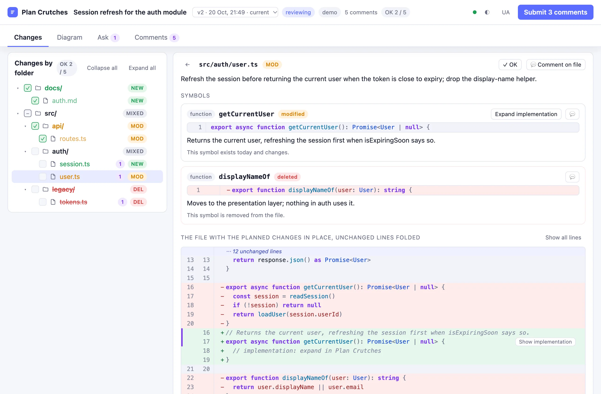
A plan for a real task names a dozen files and twice as many methods. Plan Crutches turns that text into a change you can read like a pull request, before any of it exists.
Every folder, file and symbol the plan touches, marked new, modified or deleted. A changed method shows as a git-style diff: its current code as removed lines, the planned code as added lines.
Select a signature, a line of the diff or a sentence of the summary and comment on it. Submit sends the comments to Claude as the next message. The next version of the plan marks them resolved.
The page is plain HTML served on 127.0.0.1 by a small Node server. Every comment, version and record is a file under ~/.claude/plan-crutches, so a review survives a restart of Claude Code.
The mod sits between plan mode and the implementation. It intercepts the moment Claude leaves plan mode and holds it until you are done.
Give Claude a task as usual. The mod adds one instruction to the plan mode reminder.
The plan file ends with a plan-crutches JSON block that lists every file and marks every symbol as new, modified or deleted.
When Claude calls ExitPlanMode, the mod reads the plan file, starts the page server, opens the page and tells Claude to wait.
Open files, tick them as OK, comment on folders, files, symbols or selected text, ask questions, build the diagram.
Your comments go to Claude as the next message. Claude updates the plan file and calls ExitPlanMode again. The page shows version 2 with your comments resolved.
Claude Code shows its own plan dialog once. Press Yes there and the implementation starts.
Steps 4 and 5 repeat until nothing is pending. When every file is marked OK and no comment waits, the Submit button becomes Approve plan:
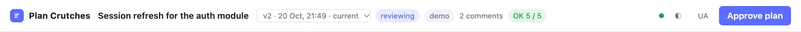
Four tabs: Changes, Diagram, Ask and Comments. The header and the tabs stay at the top while you scroll. Every screenshot below is the demo plan that ships with the mod.
The tree shows every folder and file the plan touches, its status and the number of comments on it. Click a file to open it, click the speech bubble to comment on it.
Tick a file as OK when it needs no comments. The box of a folder ticks every file under it. When a new version changes a file, the mod clears its OK mark, so nothing changed slips through unseen. The header counts the OK files.
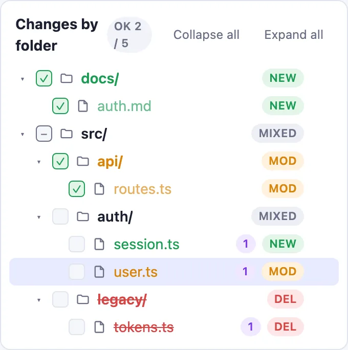
A file view lists each symbol with its highlighted signature and what the plan does to it. Below them, a diff against the current file. A modified method appears as git shows it: its current code as removed lines, the planned signature as added lines. A deleted method appears as removed lines only. One click shows the whole file with the same changes woven in at their place.
Expand implementation asks the model for the body of a symbol. The generated code takes the place of the stub right there, under the removed lines, and you can comment on its lines.
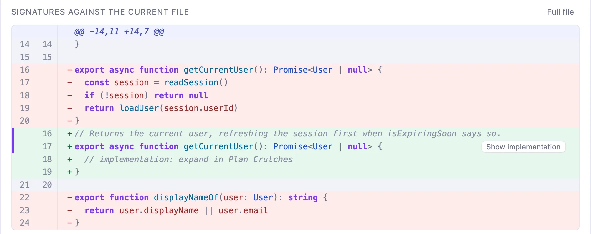
Select text with the mouse in a code block, the summary, the task or an answer. A popup opens next to the selection. A code comment keeps the line range and the selected text, and the lines stay marked in the diff.
Folders, files and symbols have their own comment buttons. Every comment is kept in the session state and in a Markdown record. Submit lists the pending comments and the OK files in the message to Claude.
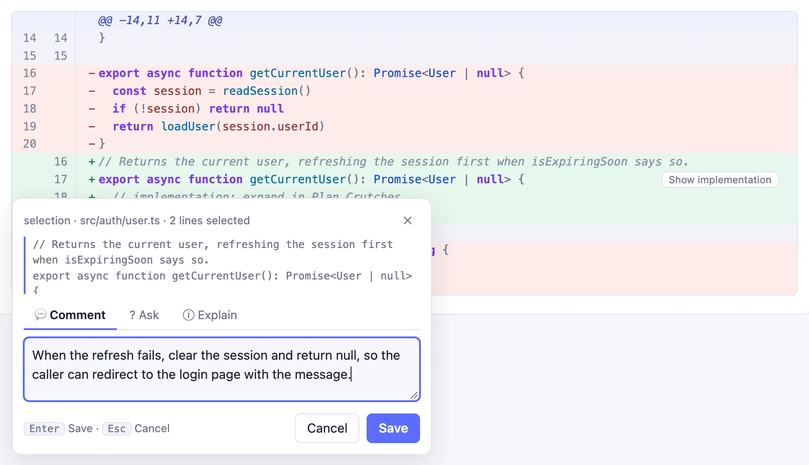
The same popup has two more tabs. Explain says what the selected place is, where it sits in the project and why the plan changes it, in the language you write in. The request goes out only when you open the tab, and the same place is explained once per version.
Ask starts a thread about the selection. Claude answers in the popup with the selection and its place as context, and you continue the conversation there. Add the conversation to a comment turns the thread into a comment on the same lines.
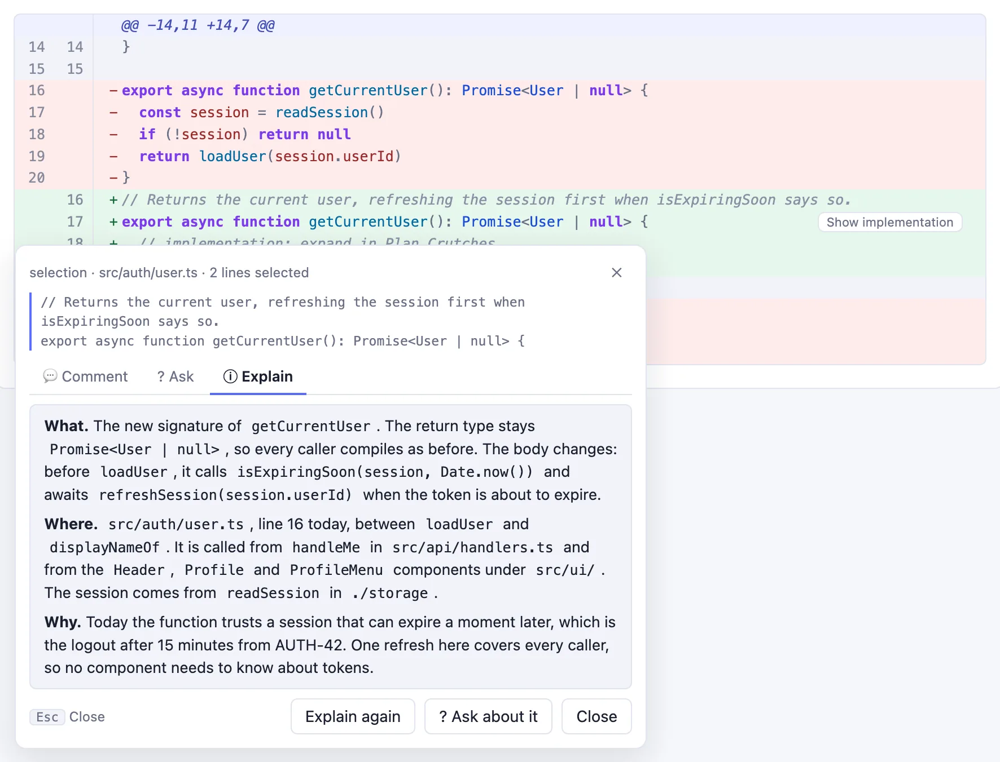
The Ask tab of the page answers from the plan and the session without changing either. Every question is a thread: Reply continues it with the earlier turns as context. A thread shows where it came from and the selected text, and it can become a comment.
Answered threads go into the Markdown record of the review.
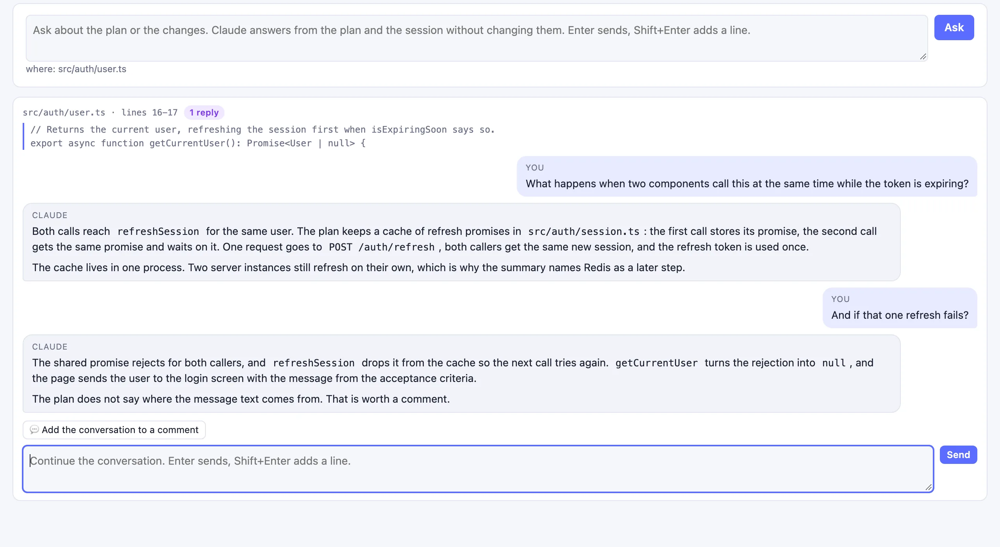
Generate change diagram starts a clean session with read-only tools. It gets the plan, reads the project and answers with a graph. The page draws one block per planned file, colored by its status, with the symbols the plan changes and the calls between them.
Click a symbol to see every place in the project that calls it, in existing code too. Drag the board to rotate it, Shift and drag to pan, the wheel to zoom, 2D to flatten. Drag a block to move it. Save as SVG writes the diagram next to the Markdown record.
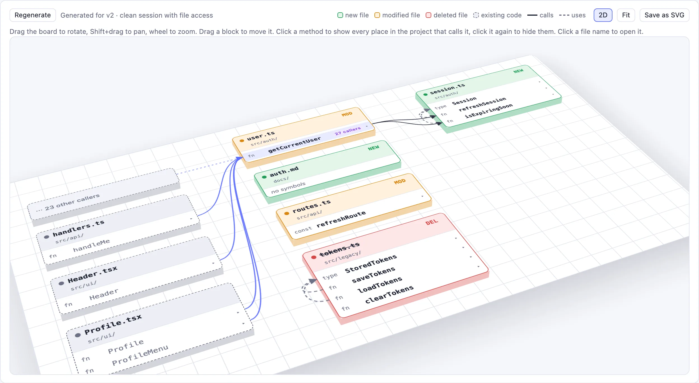
Every version of the plan is saved. Highlight changes shows the summary as a text diff against an earlier version and marks each file and symbol in the tree as added, changed or removed. A file the new version dropped stays as a crossed-out row.
The version list in the header opens an earlier version read-only. Bring this version back writes it into the plan file as the next version. The Comments tab lists every comment by state, the versions and the history of the review.
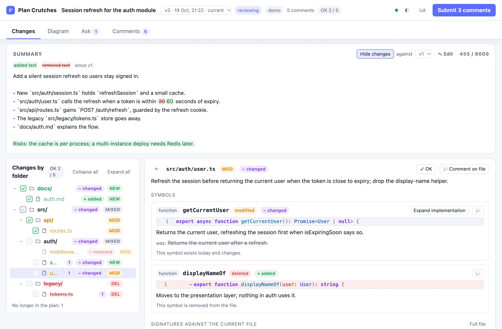
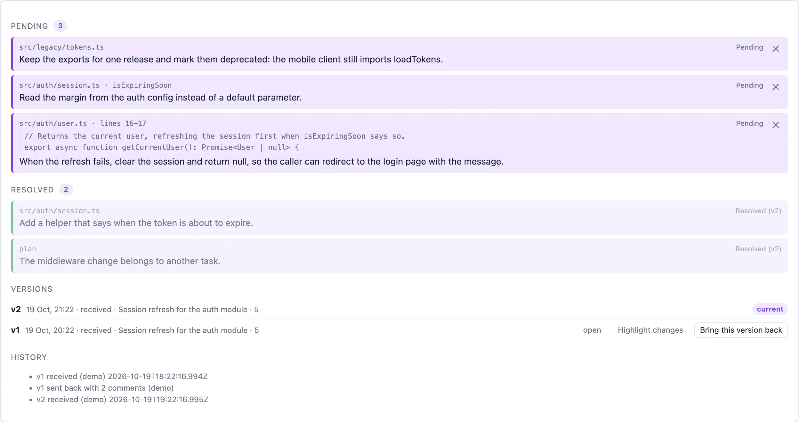
Press Edit on the summary, change the text and Save to the plan. The text goes into the plan file, and the next revision prompt tells Claude to keep your wording. The task block above the summary shows the raw task, from the Jira issue Claude fetched or from your prompt.
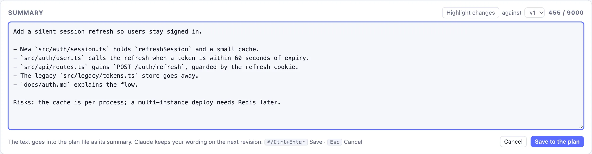
Resume the session and the review comes back on its own. In a new session in the same folder, /plan-review restore brings it back: the plan, the comments, the questions and the diagram.
/plan-review open <path> reviews a Markdown plan file without plan mode: a plan from an earlier session under ~/.claude/plans/, or one you wrote by hand.
Every reviewed plan is recorded as Markdown under ~/.claude/plan-crutches/<project>/, with every version of the plan and the SVG of the diagram next to it.
The page follows your system theme or the toggle in the header, and speaks English or Ukrainian. The colors are CSS variables you can override in web/custom.css. The pane in Claude Code stays as a second view with the page link.
The repository is its own plugin marketplace. One command adds the marketplace and the plugin.
/plugin install plan-crutches --marketplace s-rybak/plan-crutchesClaude Code asks to add the marketplace. Answer y, then pick a scope. The user scope loads the mod in every project.
claude plugin install plan-crutches --marketplace s-rybak/plan-crutchesClick + next to the prompt box, then Plugins, then Add marketplace with s-rybak/plan-crutches, then Add plugin.
claude plugin update plan-crutchesThen /reload-plugins in a session. A session keeps the mod it loaded at its start, so start a new session after an update.
In a session with the mod installed:
/plan-review demoOr from a clone of the repository, without the mod:
node scripts/demo-server.mjsThen open http://127.0.0.1:4818/?t=demo. The demo server answers the page itself, with canned answers in place of the model.
The server answers only requests whose Host header names the local machine, and every API call carries a token made once per session. Project files are served under the same token, never from outside the project folder.
The commands of the mod and its options. Set the options in /config or in settings.json under pluginConfigs.plan-crutches.options.
| Command | What it does |
|---|---|
/plan-review | If the page server is not running, starts it. Opens the page and the pane. |
/plan-review demo | Loads a demo plan so you can try the page without plan mode. |
/plan-review open [path] | Opens a plan file for review without plan mode. With no path, it opens the plan file of this session, or else the newest file under ~/.claude/plans/. The same file under review gets the next version and keeps the comments. |
/plan-review url | Prints the page address with its token. |
/plan-review restore | Brings back the stored review of this folder: the plan, the comments, the questions and the diagram. |
/plan-review close | Closes the pane. The page keeps running. |
/plan-review stop | Stops the page server. |
/plan-review reset | Clears the review state. |
| Option | Default | Meaning |
|---|---|---|
language | en | Page and pane language, en or uk. |
model | sonnet | Model for the light calls: plan structure extraction, the pick of project files for an implementation, the change diagram and its callers, and answers without a session fork. |
bodyModel | opus | Model that writes method bodies. Empty means the model option. |
plansDir | ~/.claude/plan-crutches | Folder for the Markdown records and SVG files. A path under ~ or an absolute path is shared, with one subfolder per project. A relative path is a folder inside the project. |
summaryLimit | 9000 | Characters of the summary shown before Show all. |
port | 4817 | Port of the page server on 127.0.0.1. A taken port falls back to a free one. |
openIn | auto | Where the page opens: auto tries the Claude desktop browser pane, then the system browser. system uses the system browser. none only shows the link. |
nodePath | empty | Path of the node executable. Empty means node from PATH, then the usual install locations. |